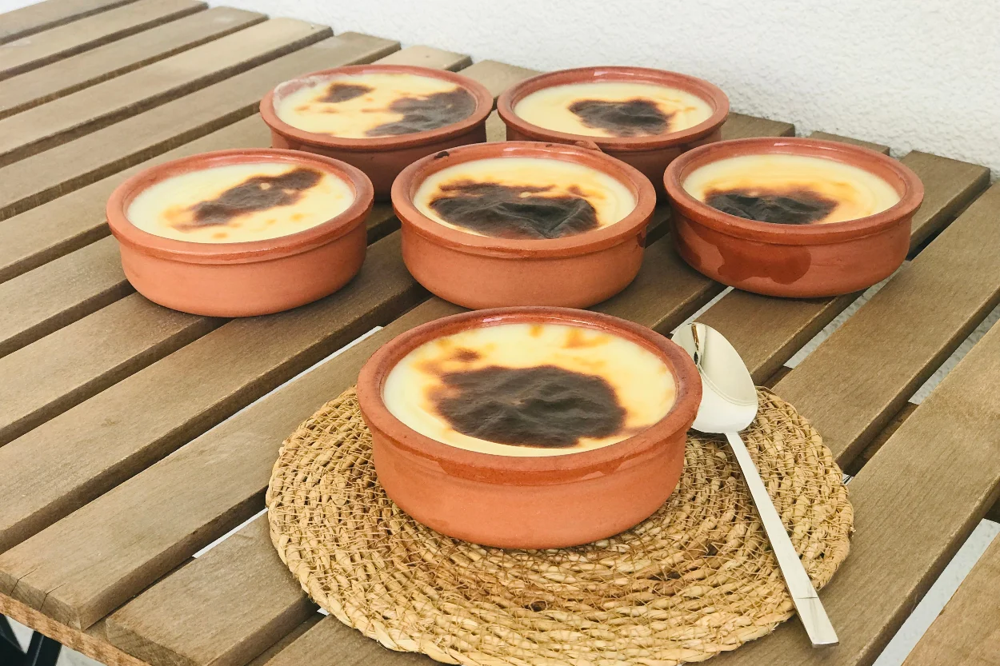
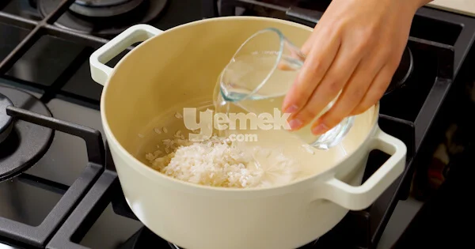
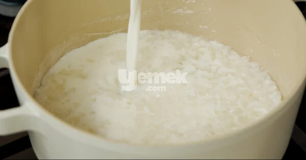
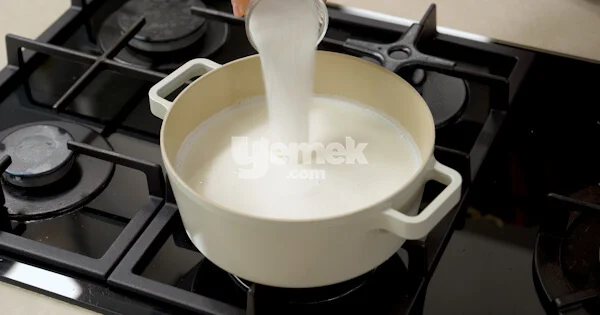
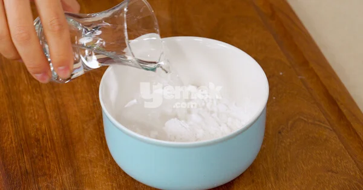
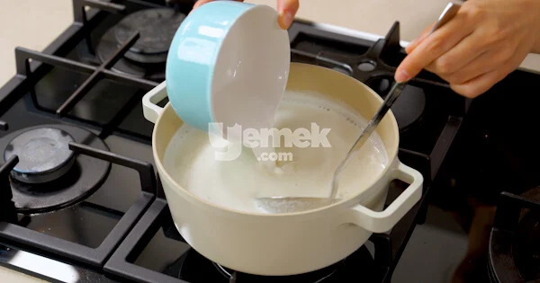
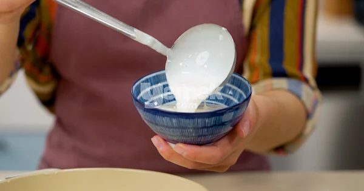
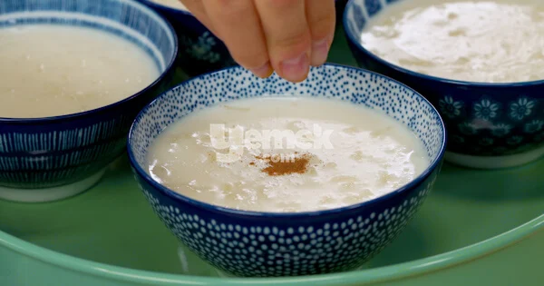
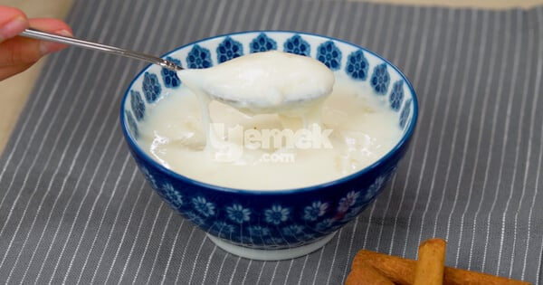

<!DOCTYPE html>
<html></html lang="Türk">
<html>
     <head>
           <meta name="description" content="Sütlaç nasıl yapılır? Sütlaç yapmanın püf noktaları nelerdir? Sitemizde bir Sütlacı en iyi şekilde yapmayı öğreneceksiniz" >
           <meta name=”viewport” content=”width=device-width, initial-scale=1.0″>
           <meta charset="UTF-8" >   
           
           <Title>Sütlaç Tatlısı Yapımı</Title>
           
    </head>
    <style>
       body{ background-color: rgb(191, 236, 236);}
    </style>
      
     <ul><ul><ul><ul><ul><ul><ul><ul>
    <h1 style="color: rgb(167, 65, 65);" > <EM>KOLAY SÜTLAÇ TARİFİ(Resimli Anlatım)</EM> </h1>
    <hr>
    <br>
    <a href="https://www.youtube.com/watch?v=O3wyuoEyEJ8" target="_blank" >
    
    </a>
    <p> <em> Videolu Sütlaç Tarifine Gitmek İçin Fotoğrafa Tıkla </em> </p>
    <div>
    <h2 style="color: rgb(167, 65, 65);" >Sütlaç Tarifi İçin Malzemeler</h2>
    <hr>
   </div>
    <div>
    <ul><ul>
       <li>1/2 çay bardağı pirinç (3 yemek kaşığı/40 gram)</li>
       <li>2 su bardağı sıcak su (400 ml)</li>
       <li>1 litre süt</li>
       <li>1 su bardağı toz şeker (200 gram)</li>
       <li>2 yemek kaşığı (tepeleme) buğday nişastası</li>
       <li>1 çay bardağı su (150 ml)</li>
    </div>
    <div>
       <h2 style="color: rgb(167, 65, 65);" >Sütlaç Yapmanın Püf Noktaları</h2>
       <hr>
       <p>Buğday nişastası yerine 3 yemek kaşığı tepeleme pirinç unu kullanabilirsiniz. </p>
       <p> Damak tadınıza göre şeker oranını azaltabilir veya artırabilirsiniz.</p>
       <p> Aşamalara ve tarifte verilen sürelere sadık kalarak pişirmenizi öneririz. </p>
       <p> Tercihen tüm pişirme süresince kısık ateş kullanmanızı, orta ateşte işe </p>
       <p> mutlaka kaynayan süte dikkat etmenizi öneririz.</p>
    </div>
    <div>
       <h2 style="color: rgb(167, 65, 65);" >Sütlaç Nasıl Yapılır?</h2>
       <hr>
    </div>
    <div>
       <ol>
          <li> <p>Sadece bir kez sudan geçirerek yıkadığınız pirinci tencereye alın ve 2 su bardağı </p> </li>
           <p> sıcak suyu ekleyerek kısık ateşte pişirmeye başlayın. Bu sırada ara ara nazikçe karıştırın.</p>
            
           <li>
               <p>Pirinç, suyu çekip lapa hale gelince üzerine sütü ilave edin. Karıştırın ve süt </p>
               <p>kaynayana kadar ara ara karıştırmaya devam edin. Kaynadıktan sonra altını </p>
               <p>kısın, 8-10 dakika daha bu şekilde karıştırarak kısık ateşte pişirin.</p>
               
          </li>
          <li>
            <p>Ardından şekeri ekleyin, karıştırın. Tekrar kaynamasını bekleyin ve</p>
              <p> <strong> 4 - 5 dakika daha </strong> kısık ateşte bu şekilde kaynatın.</p>
              
          </li>
          <li>
            <p>Nişastayı eklemek için bir kabın içerisine alın, 1 çay bardağı suyla karıştırın.</p>
            
          </li>
          <li>
            <p>Aynı anda hem karıştırıp hem tencereye ekleyin. Azar azar dökerek eklerseniz </p>
            <p>topaklanma  riskini de engellemiş olursunuz. Karıştırdıktan sonra hafifçe kıvam </p>
            <p>alana kadar pişirin. Bu sırada tekrar kaynayacak ve minik minik balonların yüzeye</p>
            <p>ulaştığını göreceksiniz, bunu gördükten sonra <strong>kısık ateşe alıp </strong> 1-2 dakika daha </p>
            <p>pişirin ve ardından ocaktan alın.</p>
            
          </li>
          <li>
            <p>Bu noktada <span> <strong> sütlacın kıvamı akışkan </strong> </span> bir boza kıvamında olmalıdır. </p>
            <p>Sütlaç harcını bir kepçeyle kaselere dağıtın.</p>
            
          </li>
          <li>
            <p>Oda sıcaklığında soğuduktan sonra buzdolabında en az 2 saat, tercihen </p>
            <p>1 akşam kadar bekletin ve servis etmeden önce buzdolabından çıkarıp </p>
            <p>5 dakika bekletin, tarçın serperek servis edin.</p>
            
          </li>
          <li>
            <p>Afiyet olsun!</p>
            
          </li>
      </ol>
      <div>
         <h2 style="color: rgb(167, 65, 65);" >Sütlaç Üzerine Ne Dökülür?</h2>
         <hr>
      </div>
      <div>
         <p>Tarçın, Hindistan cevizi, çekilmiş fındık ve çekilmiş badem dökebilirsiniz.</p>
      </div>
    <br>
    <br>
    <br>
    <br>
    
      </div>

    


    
</html>